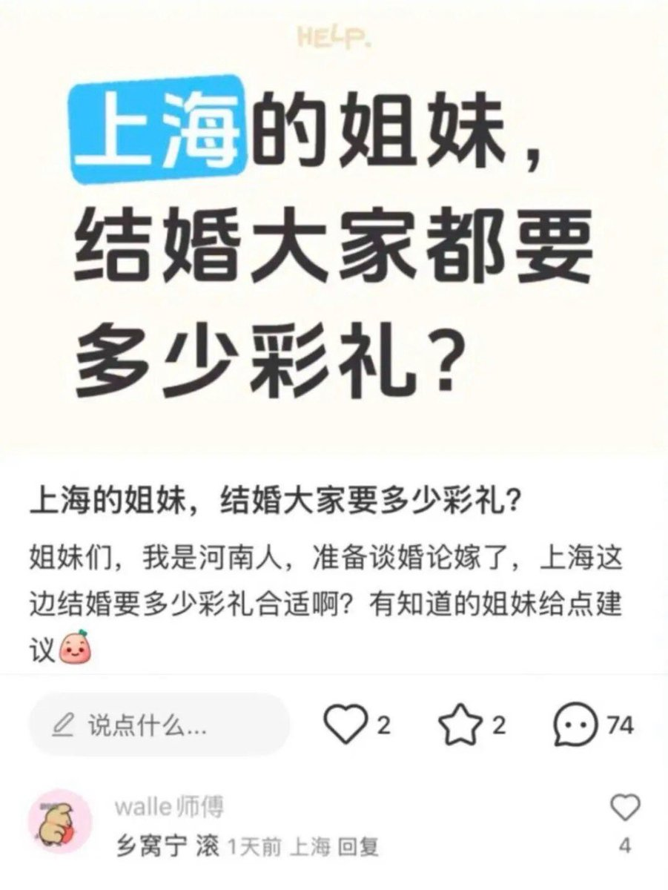

彩礼这个东西，本质上是农业社会生产关系下出现的一种补偿支付。
因为在那样的社会里，女性出嫁后，通常就成了夫家的人，娘家平白少了一个重要的劳动力（男耕女织的自然经济下，女儿的劳动贡献很实在）。
彩礼就是男方家庭对女方家庭这种损失的补偿，也算是一种对养育之恩的回报。
而在当今社会，农业社会的形态早已大幅衰落，女性出嫁后的限制也没那么严格了，女儿出嫁后依然可能承担对娘家的责任（尤其独生子女时代），所以“平白无故少了一个劳动力”的说法根本站不住脚了。
因此，支付彩礼往往就变成了一种礼节性的表达。在因为经济发达而往往变得思想开放、精神文明富足的地区，最后这笔钱大多还是归新成立的小家庭支配，用来支持小两口的新生活。
然而，在经济和思想观念仍然相对落后的地区，彩礼依然在扮演它早已不再需要的角色——有时成了对女方家庭养老或经济支持的替代手段，也加剧了婚姻市场的扭曲和负担。
说白了就是，逮着🐢🐢狠狠爆金币

因为在那样的社会里，女性出嫁后，通常就成了夫家的人，娘家平白少了一个重要的劳动力（男耕女织的自然经济下，女儿的劳动贡献很实在）。
彩礼就是男方家庭对女方家庭这种损失的补偿，也算是一种对养育之恩的回报。
而在当今社会，农业社会的形态早已大幅衰落，女性出嫁后的限制也没那么严格了，女儿出嫁后依然可能承担对娘家的责任（尤其独生子女时代），所以“平白无故少了一个劳动力”的说法根本站不住脚了。
因此，支付彩礼往往就变成了一种礼节性的表达。在因为经济发达而往往变得思想开放、精神文明富足的地区，最后这笔钱大多还是归新成立的小家庭支配，用来支持小两口的新生活。
然而，在经济和思想观念仍然相对落后的地区，彩礼依然在扮演它早已不再需要的角色——有时成了对女方家庭养老或经济支持的替代手段，也加剧了婚姻市场的扭曲和负担。
说白了就是，逮着🐢🐢狠狠爆金币

「🫢乡毋宁到上海■■来了」
上海结婚收彩礼的比例大约只有 37% ，是全国最低的地区之一，而且大多是外地人结婚才会有「彩礼」一说，本地人结婚通常没有彩礼。
上海人家庭结婚，一般是双方共同出钱，建设一个小家庭，而不是男方出钱给女方，把婚礼过得活像「人口买卖」。 https://t.co/VznGBUSUvo
上海结婚收彩礼的比例大约只有 37% ，是全国最低的地区之一，而且大多是外地人结婚才会有「彩礼」一说，本地人结婚通常没有彩礼。
上海人家庭结婚，一般是双方共同出钱，建设一个小家庭，而不是男方出钱给女方，把婚礼过得活像「人口买卖」。 https://t.co/VznGBUSUvo